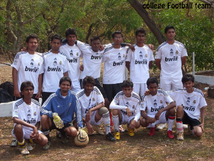
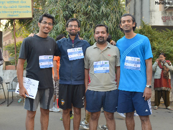
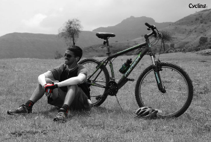
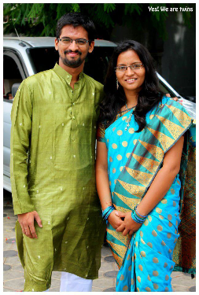
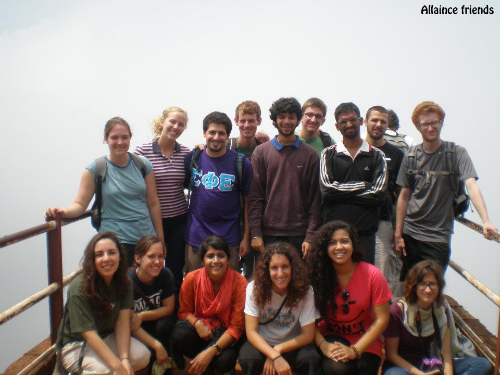

About Me:
We all make choices, but in the end our choices make us. Bioshock
Half way into my Engineering program to become a typical Electronics Engineer, I decided I’d be better off living my dream of becoming a Video Game Designer. I decided to give my Design Skills a shot (which even I didn’t know I had) and I got selected for the advanced program of Video Game Design and Project Management at DSK SUPINFOGAME.
This was one of the best experiences of my life but also the hardest. I found myself a complete beginner in this new industry. Even though I was playing games on computer since I was 4, making games was something new for me. But I learned how to perform at high levels, thanks to the Supinfogame trainers and self-reliance, a characteristic which a gamer like me possesses.
In 2007, during my Diploma in electronics, I joined an NGO (no you don’t get to know the name), where we used to conduct a 2 day workshop for youth about their career choices and dreams. These workshops were based on Neuro-Linguistic Programming (NLP) techniques (nothing related to computer programming). After working there for around 3 years I found NLP very interesting and thus in 2010 I attended an NLP-practitioners’ program to learn more about using NLP myself. This program made me realize my strengths, weaknesses, my passion for video games and made me even more confident about my decision to choose Game Design as my career.
More About Me
Other than playing video games I love playing and watching football (Soccer). I’m an Arsenal FC supporter. I have captained my college football team for 1 year and I organized a private local football league for 3 years where more than 150 players participated. Besides football, cycling and running are other sports of my interest. I won the Pune City Cycling Challenge in 2011 and completed the Pune Running Marathon in 2013.
- 
- 
- 
Even More About Me
- I’m a twin.
- I worked part time as an interpreter for American students who visited Pune city under the program of Alliance for Global Education.
- I love RPGs, FIFA and Indie Games.
- I’m a huge fan of the Elder Scrolls series.
- I was a part of the team which won Travian (persistent MMORTS) consecutively for 2 years on Indian Servers.
- I love gadgets. I want them all.
- Music? Eminem mostly.. but my other favorites are Imagine Dragons, Within Temptation, Evanescence and Daft Punk
- 
- 
What Now.. What Next?
As for now I’m currently working on my End of the Year Game project No Light with my team. And when I’m not working you can find me playing either “Elder Scrolls Online” or “Team Fortress 2” on Steam.
In near future I’m looking for a minimum 3 months internship or a permanent job in the field of Game Design.